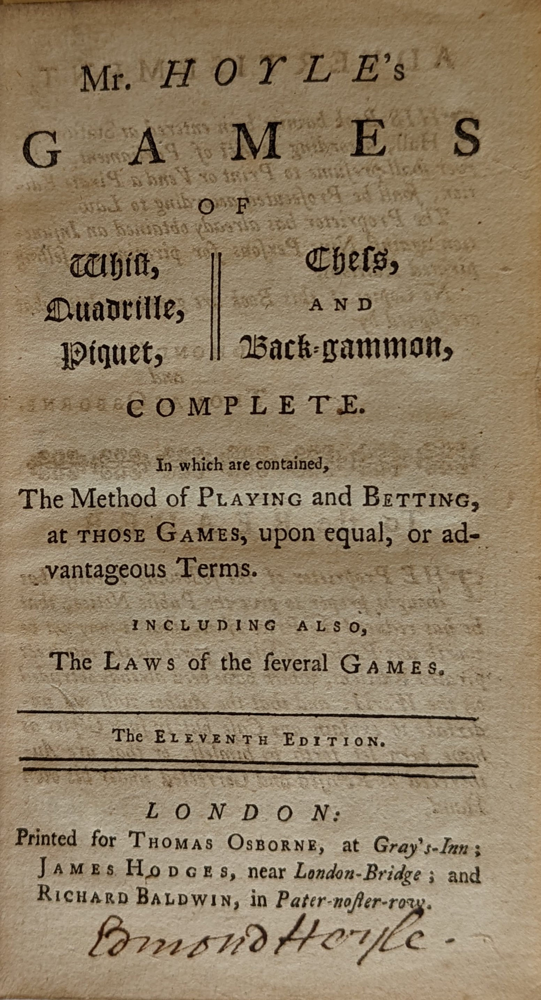
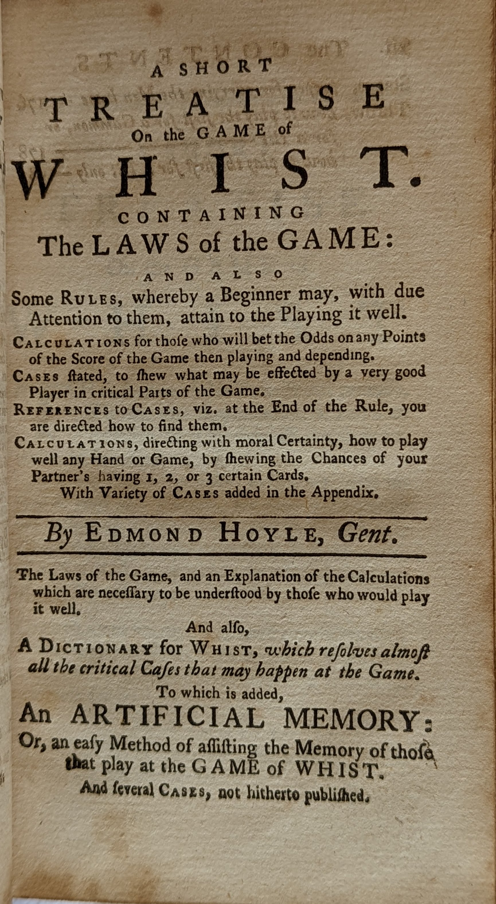

 |
Title: |
Mr. HOYLE's | GAMES | OF | [3 lines to left of double rule] Whist, | Quadrille, | Piquet, | [3 lines to right of double rule] Cheſs, | AND | Back=gammon, | COMPLETE. | In which are contained, | The Method of Playing and Betting, | at those Games, upon equal or ad-|vantageous Terms. | INCLUDING ALSO, | The Laws of the ſeveral Games. | [rule] | The Eleventh Edition. | [double rule] | LONDON: | Printed for Thomas Osborne, at Gray's-Inn; | James Hodges, near London-Bridge; and | Richard Baldwin, in Pater-noſter-row. |
| Collation: |
12o: π4 A6 B–I12 K8 [$1–5 (−A4,5,K5;+A1,B6) signed]; 114 leaves, pp. [6 ] i–xii, [2 ] [1] 2–81 [82–85] 86–111 [112–115] 116–148 [149] 150–164 [165–167] 168–208 |
| Section Title Whist |
 |
A SHORT | TREATISE | On the GAME of | WHIST. | CONTAINING | The LAWS
of the GAME: | AND ALSO | Some Rules, whereby a Beginner may, with due | Attention to them, attain to the
Playing it well. | Calculations for thoſe who will Bet the Odds on any Points | of the Score of the
Game then playing and depending. | Cases ſtated, to ſhew what may be effected by a very good | Player in
Critical Parts of the Game. | References to Cases, viz. at the End of the Rule, you | are directed how to find them. | Calculations, directing with moral Certainty, how to play | well any Hand or Game,
by ſhewing the Chances of your | Partner’s having 1, 2, or 3 certain Cards.
| With Variety of Cases added in the Appendix. | [rule] | By Edmond Hoyle, Gent. | [rule] | The Laws of the Game, and an Explanation of the Calculations
| which are neceſſary to be underſtood by thoſe who would play | it well. |
And alſo, | A Dictionary for Whist, which reſolves almoſt | all the critical Caſes that may
happen at the Game. | To which is added, | An ARTIFICIAL MEMORY: | Or, an eaſy Method of
aſſiſting the Memory of thoſe | that play at the GAME of WHIST. | And
ſeveral Cases, not hitherto publiſhed. |
| Half Title: |
[row of type orn] | Mr. HOYLE’s | GAMES | COMPLETE. | [row of type orn] | Price. 3s. bound. |
| Section Title Quadrille |
[row of type orn] | A SHORT | TREATISE | On the GAME of | QUADRILLE;
| SHEWING | The Odds of winning or loſing moſt Games | that are commonly
played; either by calling | a King, or by playing Sans Prendre. | To which are added, | The LAWS of the GAME. | The Third Edition. | By Edmond Hoyle, Gent. | [row of type orn] |
| Section Title Piquet and Chess |
[row of type orn] | A SHORT | TREATISE | On the GAME of | PIQUET; |
Directing, with moral Certainty, how to diſ-|card any Hand to Advantage, by
ſhewing | the Chances of taking in any one, two, | three, four, or five
certain Cards. | Computations for thoſe who Bet their | Money at the Game. | Alſo the LAWS of the Game. | To which are added, | Some Rules and Observations for play-|ing well at CHESS. | The Third Edition. | By Edmond Hoyle, Gent. | [row of type orn] |
| Section Title Backgammon |
[row of type orn] | A SHORT | TREATISE | On the GAME of |
BACK-GAMMON. | CONTAINING | [12 lines to left of double rule] A Table of the thirty-ſix | Chances, with Directions | how to find out the
Odds | of being hit, upon ſingle, | or double Dice. | Rules whereby a
Beginner | may, with due Attention | to them, attain playing it | well. |
The ſeveral Stages for carry-|ing your Men home, in | order to loſe no
Point. | [12 lines to right of double rule] How to find out who is
for-|wardeſt to win a Hit. | Caſes ſtated for Back-Games, | with Directions
how to | play for one. | Caſes ſtated, how to know | when you may have the |
better of ſaving a Gam-|mon by running. | Variety of Caſes of Curioſity |
and Inſtruction. | The Laws of the Game. | The Fourth Edition. | By Edmond Hoyle, Gent. | [row of type orn] |
| Contents: |
Signature (Page) Reference |
Contents |
Signature (Page) Reference |
Running Titles |
| π1r–π1v |
blank |
|
|
| π2r |
half title |
|
|
| π2v |
‘ADVERTISEMENT. | [...] | To the READER. | [...] | [autograph of Thomas
Osborne]’ |
|
|
| π3r |
title [autograph of Edmond Hoyle] |
|
|
| π3v |
blank |
|
|
| π4r–A5v (i–xii) |
‘[double rule] | The | CONTENTS. | [...]’ |
π4v–A5v (ii–xii) |
‘The CONTENTS.’ |
| A6r |
section title Whist |
|
|
| A6v |
blank |
|
|
| B1r–E5r (1–81) |
‘[double rule] | A SHORT | TREATISE | On the GAME of | WHIST. |
[...]’ |
B1v–E5r (2–81) |
‘A ſhort Treatise on | the Game of WHIST.’ |
|
|
on B2r (3) |
‘the GAME of WHIST.’ |
| E5v (82) |
blank |
|
|
| E6r (83) |
section title Quadrille |
|
|
| E6v (84) |
blank |
|
|
| E7r–F8r (85–111) |
‘[double rule] | A | TREATISE | On the GAME of | QUADRILLE. |
[...]’ |
E7v–F8r (86–111) |
‘A ſhort Treatise on the | Game of QUADRILLE.’ |
| F8v (112) |
blank |
|
|
| F9r (113) |
section title Piquet and Chess |
|
|
| F9v (114) |
blank |
|
|
| F10r–H2v (115–148) |
‘[double rule] | A | TREATISE | On the GAME of | PIQUET. |
[...]’ |
F10v–H2v (116–148) |
‘A Treatise on PIQUET.’ |
| H3r–H10v (149–164) |
‘[double rule] | SOME | Rules and Observations | FOR | Playing well at CHESS. | [...]’ |
H3v–H10r (150–163) |
‘Rules and Observations | for playing at CHESS.’ |
|
|
H10v (164) |
‘Rules and Observations, &c.’ |
| H11r (165) |
section title Backgammon |
|
|
| H11v (166) |
blank |
|
|
| H12r–K8v (167–208) |
‘[double rule] | A SHORT | TREATISE | On the GAME of | BACK-GAMMON.
| [...]’ |
H12v–K8r (168–207) |
‘A ſhort Treatise on | the Game of BACK-GAMMON.’ |
|
|
K8v (208) |
‘A ſhort Treatise, &c.’ |
| on K8v (208) |
errata |
|
|
| Press Figures: |
A4v(o):5; B2v(o):1; B7v(i):4; C2v(o):3; C6r(i):1; D1v(i):3; D11r(o):3; E1v(i):4; E11r(o):4; F7v(i):1; F12v(o):7; G1v(i):3; G12v(o):3; H7v(i):7; H8v(o):4; I5v(i):4; I6v(o):4; K7r(o):3; K7v(i):3 |
| Publisher: |
Thomas Osborne, James Hodges, Richard Baldwin |
| Notices: |
1756-12-21 London Evening Post: "Saturday, the 1st of Jan. next will be publish’d, beautifully printed on
a fine writing paper, in a small genteel pocket volume, price only three
shillings neatly bound." |
| Price: |
3s. (half title, advertisement) |
| References: |
ESTC T87520, Horr 656, Jessel 803, Marshall s7 no.9 p24 (1890-01-11), Rather 40 |
| Copies Seen: |
BFl [I.795/HOYL (b1124775)]; L [7918.a.82] (Google); O [Jessel f.555]; Copisarow; CLU-SC [Edgeworth 81408]; NvLN [GV1241.H69 1755]; NvLN [GV1241.H69 1755 c2]; OCl [789.87H F57L]; TNJ [GV1241.H8 M11]; Levy [1251]; Levy [1665] |
| Other Copies: |
C [Lib.8.75.2]; SHu [RBR 795(H)]; Walker; CaOHM [RB A 471]; CtHT-W [GV1241.H6 1757]; DeU [GV1243.H85 1761]; KWiU [SpC 1241]; ViW [GV1241.H6 1757]; WMM [GV1241.H6 1750] |